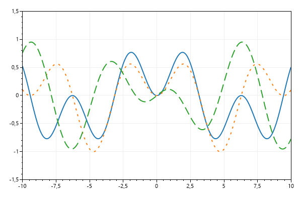

<html><head>  <title>Plot Type: Function - ScottPlot 4.1 Cookbook</title>  <link href=https://cdn.jsdelivr.net/npm/bootstrap@5.1.3/dist/css/bootstrap.min.css rel=stylesheet></head><body class=bg-light>  <div class='container' style='max-width:1000px'>    <div class='my-4'><code>THIS PAGE IS FOR TESTING ONLY</code></div>    <div class='display-4'>Plot Type: Function - ScottPlot 4.1 Cookbook</div>    <div class='fs-5'><i>Function plots accept a Func (not distinct X/Y data points) to create line plots which can be zoomed infinitely.</i></div>    <article class='bg-light shadow rounded my-5'>    <div class='p-3 rounded bg-white'>      This page contains recipes for the <i>Function</i> category.<br>Visit the <a href='../../index.dev.html'>Cookbook Home Page</a> to view all cookbook recipes.
<h3 class='mt-5' id='function'>Function</h3>
<div>Function plots are defined by a function (not X/Y data points) so the curve is continuous and can be zoomed in and out infinitely</div>
<pre class='bg-light border rounded p-3'>var plt = new ScottPlot.Plot(600, 400);

// Functions are defined as delegates with an input and output
var func1 = new Func<double, double?>((x) => Math.Sin(x) * Math.Sin(x / 2));
var func2 = new Func<double, double?>((x) => Math.Sin(x) * Math.Sin(x / 3));
var func3 = new Func<double, double?>((x) => Math.Cos(x) * Math.Sin(x / 5));

// Add functions to the plot
plt.AddFunction(func1, lineWidth: 2);
plt.AddFunction(func2, lineWidth: 2, lineStyle: LineStyle.Dot);
plt.AddFunction(func3, lineWidth: 2, lineStyle: LineStyle.Dash);

// Manually set axis limits because functions do not have discrete data points
plt.SetAxisLimits(-10, 10, -1.5, 1.5);

plt.SaveFig("function_quickstart.png");</pre>


    </div>    </article>  </div></body></html>